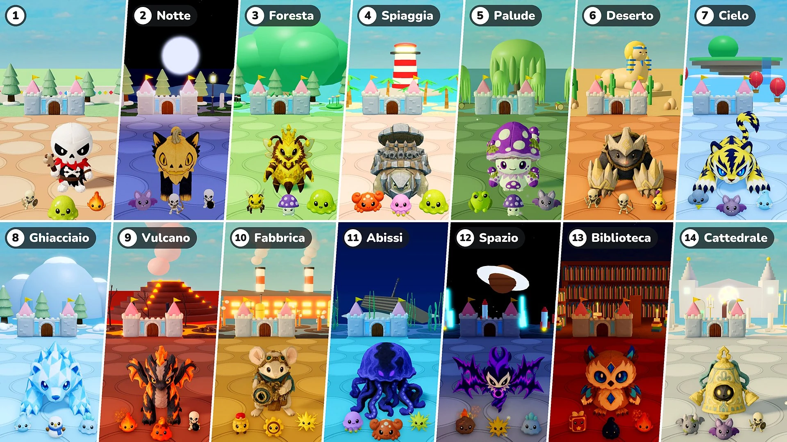

Stagione 2 · Aggiornamento 07 · 10 novembre

Difesa del castello
- Fasi: Ora ogni 10 round formano una fase. La Fase 1 è il paesino di sempre; dalla Fase 2 ogni fase è un luogo diverso, con la sua luce e il suo meteo, il suo terreno e le sue decorazioni, e con i suoi mostri, le sue élite e i suoi boss. Dopo l'ultimo luogo, i luoghi ricominciano da quello della Fase 2.
- Boss: Da un boss in più ogni 10 round a un solo boss, accompagnato da tante élite quanti erano i boss in più (1 ai round 15 e 20, 2 ai round 25 e 30…). Dalla Fase 2, boss ed élite sono i peluche di quel luogo. Ora anche Regimiele può arrivare come boss.
- Élite: Le élite ora sono grandi 1,15 volte. Dalla Fase 2 la loro salute aumenta del 50% a ogni fase, e le stelle che lasciano cadere passano da 10 a 10 × il numero della fase (20 nella Fase 2, 30 nella Fase 3…).
- Nuovi mostri: Ai luoghi si aggiungono 16 nuovi mostri (Pipistrello · Granchio · Medusa · Rana velenosa · Scorpione · Nube temporalesca · Spirito del gelo · Pupazzo di neve · Slime di ghiaccio · Slime di lava · Soldatino a carica · Ingranaggio · Meteora · Libro magico · Goccia d'inchiostro · Gargoyle). Le schede Mostri e Boss dell'Enciclopedia ora sono divise per fase.
- Potenziamento statistiche: Nei round in cui si scelgono i peluche non viene più proposto il Potenziamento statistiche.
- Evocazioni: Risolto un problema per cui i Potenziamenti statistiche non si applicavano alle evocazioni. Ora si applicano alle api di Regimiele, all'albero di Germopio e al Gemello dello specchio come ai peluche, e un Potenziamento statistiche scelto mentre un'evocazione è in campo si applica subito.
- Velocità ×2: Accanto al pulsante di pausa c'è ora un pulsante «×2». Premilo e la battaglia va al doppio della velocità; premilo di nuovo per tornare alla velocità normale. Il tempo per scegliere e il passo del tuo avatar non cambiano. In «Gioca insieme» cambia l'intera partita, chiunque lo prema.
- Salute del castello: La barra della salute del castello è più grande e i suoi numeri compaiono subito accanto alla barra.
Fasi e luoghi
I luoghi dalla Fase 2 in poi, con i loro mostri e i loro boss. I peluche che arrivano come Boss o Grande boss di un luogo arrivano anche come sue élite.
- Fase 2 · Notte: Pipistrello · Arciere scheletro · Scheletro bombarolo — Boss: Blissfox · Soffino — Grande boss: Dreadfox · Pumpcat
- Fase 3 · Foresta: Ape operaia · Fungo velenoso · Slime — Boss: Pignospino · Marmiele — Grande boss: Regimiele — Élite: Germopio
- Fase 4 · Spiaggia: Granchio · Medusa · Slime — Boss: Cocoblin · Tartasasso — Grande boss: Rocoblin · Tartaferro
- Fase 5 · Palude: Rana velenosa · Fungo velenoso · Pipistrello — Boss: Mudpug · Lumaveleno — Grande boss: Boghorn · Sporungo
- Fase 6 · Deserto: Guerriero scheletro · Arciere scheletro · Scorpione — Boss: Bonis · Morbizampa — Grande boss: Bonix · Ferrozampa
- Fase 7 · Cielo: Nube temporalesca · Pipistrello · Spirito del gelo — Boss: Voltis · Auromartora — Grande boss: Voltiger · Griffion
- Fase 8 · Ghiacciaio: Spirito del gelo · Pupazzo di neve · Slime di ghiaccio — Boss: Glassy · Shardfin — Grande boss: Polarrock · Prismlance
- Fase 9 · Vulcano: Brace · Slime di lava · Scheletro bombarolo — Boss: Flamo · Ashgon — Grande boss: Flammonyx · Embergon
- Fase 10 · Fabbrica: Soldatino a carica · Ingranaggio · Scintilla — Boss: Mouseball · Ingranatic — Grande boss: Optimouse · Obscor
- Fase 11 · Abissi: Medusa · Granchio · Scintilla — Boss: Hydris · Friko — Grande boss: Serenis · Abyzel
- Fase 12 · Spazio: Meteora · Scintilla · Slime di ghiaccio — Boss: Voidren · Echowing — Grande boss: Voidling · Noisewing
- Fase 13 · Biblioteca: Libro magico · Goccia d'inchiostro · Brace — Boss: Melty · Briarowl — Grande boss: Candric · Crystowl
- Fase 14 · Cattedrale: Gargoyle · Pipistrello · Guerriero scheletro — Boss: Lilupi · Campanino — Grande boss: Radiant · Campanone